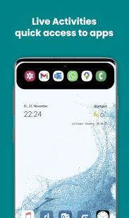
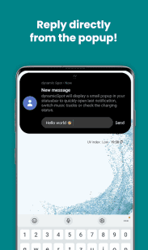

Android 没有灵动岛，dynamicSpot 是怎么凭空造出来的
从 Media Session 到悬浮窗服务，拆解 dynamicSpot 在 Android 上模拟灵动岛的技术路径，以及这套方案的能力边界。
iPhone 的灵动岛是硬件级的——它本来就是那块被挖孔切掉的屏幕区域，苹果用软件把它变成了一个会变形的交互容器。Android 厂商也跟着做了打孔屏，但没人在系统层面提供一个类似的"动态岛"API。dynamicSpot官网偏要在这片真空里造一个出来。
这不是什么新奇的 App 想法——在它之前已经有好几款类似的灵动岛模拟工具，要么卡顿掉帧，要么功能残缺。dynamicSpot 能站住脚，根本原因是它没有硬啃 Android 通知系统那套笨重的旧框架，而是选了几条更轻量的旁路——想亲自体验的可以从官方下载拿一份。
三条旁路，各走各的
我把 dynamicSpot 的功能拆开来读，发现它对不同场景用了完全不同的接入方式，而不是一个大一统的方案。这是它流畅的关键——每条旁路都只拿自己需要的数据，不拖泥带水。
第一条旁路是 Media Session API。这是 Android 5.0 引入的统一播放控制接口，音乐、视频、播客 App 只要正确实现了它，系统就能拿到播放状态、专辑封面、支持的控制按钮。dynamicSpot 的音乐岛直接读取这个对象，不通过通知，不监听广播，拿到的就是播放器当前的真实状态。所以你切歌的瞬间灵动岛立刻跟着变，没有传统通知那种几百毫秒的延迟。

第二条旁路是 系统广播监听。充电状态条就是这么来的——Android 在插上或拔掉充电器时会发出一个标准广播，dynamicSpot 的后台服务注册这个广播接收器，收到后立刻更新电量百分比和进度条。这个机制同样用于耳机插拔、闹钟触发等场景。广播是系统级的，任何 App 都能监听，不需要特殊权限，响应速度也是即时的。
第三条旁路最直接：悬浮窗服务。灵动岛药丸本身就是一个悬浮窗——它不嵌在状态栏里，而是叠在所有应用之上。这带来了两个后果：一是它能被拖拽到屏幕任意位置，对齐挖孔摄像头也好、避开状态栏图标也好，用户说了算；二是它绕开了 Android 各厂商对状态栏的各种定制修改，在小米、华为、OPPO、三星上表现一致，不需要为每个机型单独适配。
为什么通知岛是个例外
你可能注意到了，我前面没提通知堆叠——这是 dynamicSpot 唯一没有走旁路的功能。Android 没有提供一个让第三方 App 直接读取通知的接口，dynamicSpot 必须请求「通知访问权限」，通过 NotificationListenerService 才能拿到其他 App 发来的通知内容。
这是它最重的一条路径，也是最容易出问题的地方。系统对 NotificationListenerService 有严格的电量优化限制——如果 dynamicSpot 被厂商的省电策略杀掉，通知岛就失效了。多通知堆叠的上限默认五条，也是因为每条通知都要维护一个完整的对象，堆多了反而影响流畅度。
理解了这个区分，就能明白为什么音乐岛和充电条体验那么顺滑，而通知岛偶尔会有延迟或漏消息——它们走的是完全不同的技术通道。
悬浮窗的代价
悬浮窗方案是 dynamicSpot 的根基，但也带来了它自己的麻烦。最常见的抱怨是重启手机后灵动岛位置会重置——这不是 Bug，是因为部分 Android 系统在重启后会清除所有悬浮窗的位置记录。dynamicSpot 能记住用户设置的偏移参数，但系统层面的位置重置它拦不住——更详细的位置配置参数可以去dynamicspot文档查。
还有一个隐形的代价：悬浮窗需要一直保持一个前台服务运行。Android 8.0 之后对后台服务的管控越来越严，dynamicSpot 必须在通知栏常驻一个「正在运行」的前台通知，才能避免被系统杀掉。有些人觉得这是个烦人的东西，关掉它灵动岛就会随时消失。

谁会需要它
如果你对 Android 生态满意，dynamicSpot 大概率不是必需品。它解决的是一个特定人群的特定痛点：用了 iPhone 几年、习惯了灵动岛的信息聚合方式、换了 Android 之后觉得通知栏和状态栏的交互太分散。对这批人来说，dynamicSpot 把充电、音乐、来电、通知这些碎片化的状态重新收回到屏幕顶部的一个统一容器里，操作路径缩短了不少。
但如果你本来就是 Android 原生通知系统的重度用户，依赖通知分组、快捷回复、直接在通知栏操作，dynamicSpot 反而会让你多一个交互层——灵动岛的上滑消除不会同步原生通知栏，等于同一条通知要处理两次。
还有一点要提：dynamicSpot 的 Pro 版解锁了更多高级功能，比如音乐可视化波形、自定义动效、更多手势映射等，但核心的灵动岛基础功能在免费版里就已经齐全了。要不要 Pro 版，取决于你对外观定制的追求程度。
这套资料在三个仓库都能拿到，GitHub 上是同步更新的主仓库，Gitee 和 GitCode 做了国内镜像方便访问和备份，内容保持一致。